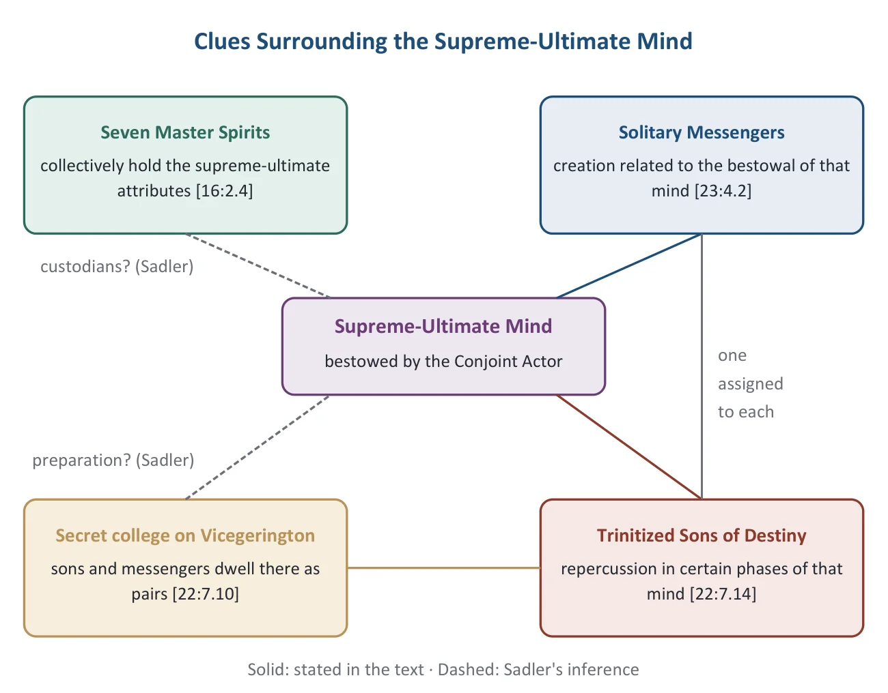

Original: Apéndice XXVI, Las funciones del Supremo-Último (pp. 501–507)
Sadler considera al Supremo-Último como un puente funcional entre el universo maestro, que es el núcleo, y el Cosmos Infinito, que es su citoplasma. El Supremo-Último no es una persona única. Es una asociación de Deidad Dual que se formará en el futuro lejano, un nivel de función que ya existe y el límite exterior de la realidad experiencial. Lo que la revelación dice acerca de la Mente Suprema-Última, los Mensajeros Solitarios y los Hijos de destino trinidizados sirve como prueba de que esta función futura ya se está preparando.
El libro de Urantia enumera a menudo estos tres juntos: Supremo, Último, Supremo-Último [13:1.18]. Sadler entiende que este último nombre es de la misma clase que «Padre-Hijo»: el nombre de la unión de una Deidad Dual que llega a existir mediante la aventura de la trinidización.
Cuando el Padre se unió al Hijo, se limitó a sí mismo solo en un aspecto.
Como la personalidad absoluta y no cualificada, el Padre puede funcionar solamente como el Hijo y con el Hijo, pero como Padre personal continúa otorgando personalidad a las diversas huestes de los diferentes niveles de criaturas volitivas inteligentes …10:2.1
Sadler espera que el Supremo-Último sea semejante. En ciertas fases los dos actúan juntos de forma inseparable, pero en otros ámbitos se puede llegar a cada una de las dos Deidades, y cada una actúa, por sí sola. Resume el Supremo-Último de tres maneras. Primero, junto con el Padre-Hijo, es una de las dos únicas asociaciones de Deidad Dual que comienzan con una trinidización de la Deidad. Segundo, aunque la asociación misma pertenece al futuro lejano, existe un nivel de función Supremo-Último desde el alba del tiempo. Tercero, marca el límite más lejano hasta el que la realidad experiencial puede extenderse hacia lo absoluto; más allá de él, lo experiencial se une con lo existencial.
La revelación nunca habla de una «mente Hijo-Espíritu», pero sí habla de una Mente Suprema-Última. Sadler teje en torno a esto un sugerente conjunto de indicios.
… algunos de nosotros postulan que la creación de estos mensajeros por parte del Espíritu Infinito está en cierto modo relacionada con la dotación por parte del Actor Conjunto de la Mente Suprema-Última.23:4.2
Los Mensajeros Solitarios fueron creados todos a la vez y son muy antiguos. Así pues, la Mente Suprema-Última fue otorgada en el alba del tiempo. Sin embargo, la asociación Supremo-Último no se formará hasta después de la sexta edad. ¿En custodia de quién reside esa mente mientras tanto? Sadler busca una analogía en la mente del Supremo. Mientras el Ser Supremo evoluciona, el potencial de esa mente lo poseen los Siete Espíritus Rectores [116:1.3]. Además, los Espíritus Rectores poseen como grupo los atributos supremo-últimos de la Tercera Fuente y Centro.
Los Siete Espíritus Rectores están dotados colectivamente de atributos supremosúltimos de la Tercera Fuente y Centro.16:2.4
Por eso Sadler infiere que los Siete Espíritus Rectores pueden tener en custodia no solo la mente del Supremo, sino también la mente del Último y la Mente Suprema-Última.
Los indicios van más lejos. Los Espíritus Rectores son también quienes sancionan las uniones mixtas en las que un finalista y un ciudadano del Paraíso-Havona trinidizan juntos, y los Hijos de destino trinidizados nacidos de esas uniones están vinculados con la Mente Suprema-Última.
Pero cuando un finalista y un habitante del Paraíso-Havona juntos trinidizan una nueva criatura, este esfuerzo conjunto repercute en ciertas faces de la Mente Suprema-Última. Los hijos trinidizados por criaturas resultantes son supercreacionales …22:7.14
A cada uno de estos hijos se le asigna un Mensajero Solitario, y los dos permanecen como pareja en la facultad secreta del cuerpo de los Hijos Creadores en Vicegerington. Mensajeros Solitarios relacionados con el origen de la Mente Suprema-Última; Hijos de destino producidos por una repercusión en esa mente; y el hecho de que la pareja resida precisamente en el mundo de los Hijos Creadores: Sadler juzga que esto es más que una coincidencia. Lo ve como una preparación para las edades postúltimas, cuando los Hijos Creadores tendrán un estatus distinto y la obra todavía no revelada del Supremo-Último se actualizará por fin.

La revelación afirma que las presencias personales del Supremo y del Último ya se encuentran en Havona [14:6.29]. Del Supremo-Último, en cambio, habla como «el futuro Supremo-Último» [13:2.10]. Como asociación, su función es todavía puro potencial. Aun así, el Supremo-Último como nivel de función ya está operando.
Para todo propósito práctico los Siete Espíritus Rectores comprenden, allí y en ese momento, el ámbito funcional del Supremo-Último en el universo maestro y para el mismo.16:1.3
De este pasaje y de la sección siguiente Sadler extrae tres conclusiones. El nivel Supremo-Último linda con lo absoluto y contiene la totalidad de lo absonito. Este nivel opera ahora dentro de la unión de los Siete Espíritus Rectores. Su alcance, sin embargo, termina con el universo maestro y no llega al Cosmos Infinito. Además, la clasificación de las actividades de Havona incluye incluso un apartado llamado «evolucionales Suprema-Últimas» [14:6.4]. Sadler lo toma como prueba de que el universo central ya ha previsto y tomado disposiciones para la actividad futura del Supremo-Último.
Si el universo maestro se considera como un universo aislado, el nivel Supremo-Último es el techo del crecimiento. Pero la revelación habla de un nivel en el que la realidad experiencial se proyecta sobre un campo más amplio, más allá del universo maestro, y llama coabsoluto a ese nivel [106:0.7]. De hecho, entre las siete clases de vida de Havona, la sexta es coabsoluta y la séptima absoluta [14:4.7].
Sadler espera que el Supremo-Último se forme después de que concluya la sexta edad del universo y que sea la primera Deidad Dual activa en el Cosmos Infinito. Así como el Padre-Hijo tomó la iniciativa en la formación del primer universo, la creación central, el Supremo-Último será el primero en vincular el universo maestro nuclear con el Cosmos Infinito citoplásmico. La revelación, sin embargo, menciona un nombre que se halla aún más lejos.
… y de este modo están ambos destinados a la futura superpersonalidad eterna del ministerio trascendental de los dominios absonitos del Último, el Supremo-Último, y aun en los niveles del Último-Absoluto.109:7.5
Más allá del Supremo-Último se encuentra el Último-Absoluto. Sadler se pregunta si podría ser otra Deidad Dual, una que surgirá en las regiones lejanas del Cosmos Infinito, y traslada la pregunta al apéndice siguiente.